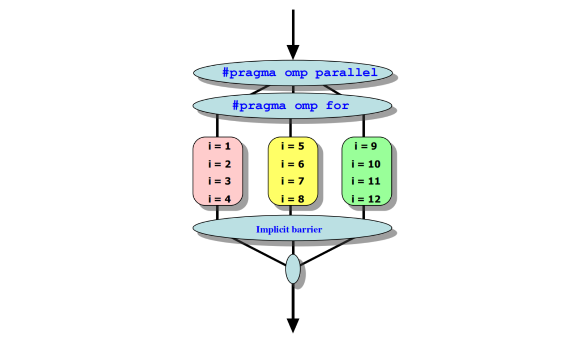
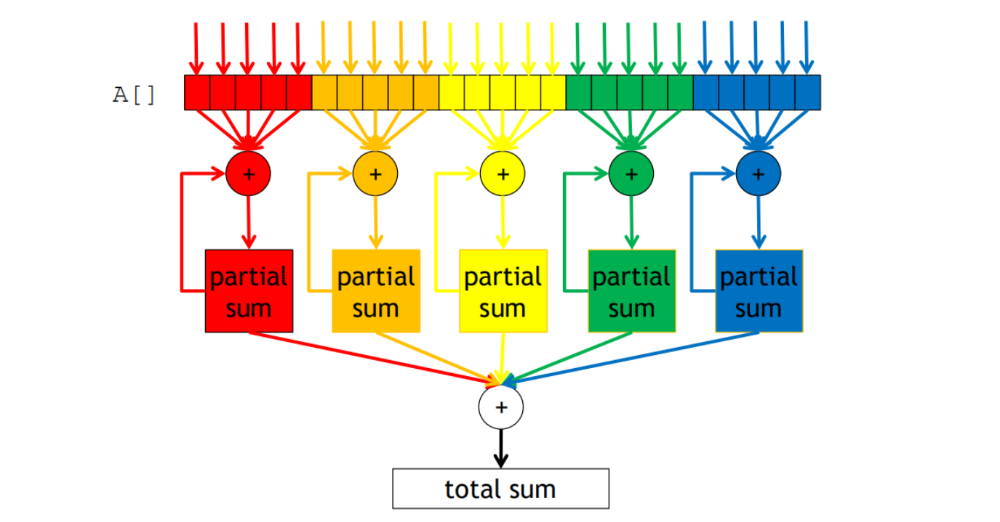
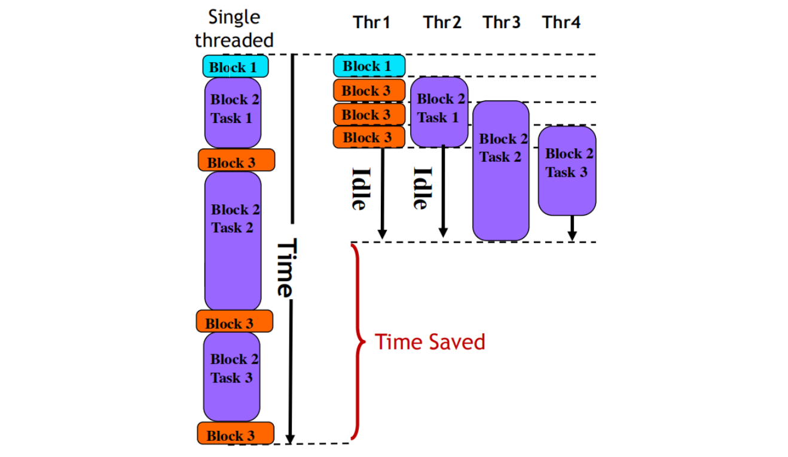

Worksharing Constructs
A worksharing construct distributes the execution of the corresponding region among the members of the team that encounters it. Threads execute portions of the region in the context of the implicit tasks that each one is executing.
Loop Construct

Sequential:
1 | for (i = 0; i < N; i++) { |
若用 Parallel 就會變得很冗長：
1 |
|
用 loop construct：
1 |
|
或是
1 |
|
預設變數
i為 private
也可以使用 collapse 來表達 Nested Loop，會展開成 N * M 的單層 for loop
1 |
|
Schedule
schedule(static[,chunk])schedule(dynamic[,chunk])- 有些 Iteration 做比較久，在 Runtime 才知道
- 一次先拿固定量的 chunk，做完再拿下一份
- 缺點：在 Runtime 才決定要拿哪些 Task 會花時間、chunk 切太小會影響效能
schedule(guided[,chunk])- 為了解決 dynamic 的缺點
- Thread 一次拿剩下的 Iteration 的一半來做
- 直到剩下的 Iteration 數量小於 chunk，就直接做完
schedule(runtime)$ export OMP_SCHEDULE="static,1"
schedule(auto)
Default: schedule(static, total_iterations/thread_count)
For example:
1 | schedule(static, 1): |
Reduction

1 | double ave = 0.0, A[MAX]; |
透過 reduction (op : list) 來處理平行化後 thread 間的 dependency (ave)
1 | double ave = 0.0, A[MAX]; |
list variable 在 thread 中初始化時會依照 op 來決定初始值
Caveats
parallel for不會檢查 dependency- 沒有辦法平行化
while或do-while - for loops 要是 canonical form
- index 要是 int or pointer type
- start, end, and incr 要 compatible
- start, end, and incr 在 loop body 中不會被改變
Master/Single Construct
只有 Master Thread 會執行：
1 |
|
只有單一個 Thread 會執行：
1 |
|
single後有一個 barrier (可以用nowait移除 barrier)
Sections/Section Construct
不同 Thread 執行不同 section
1 |
|
sections後有一個 barrier (可以用nowait移除 barrier)
Task Construct

Handle irregular patterns and recursive function calls
1 |
|
Barriers
Thread barriers: Applies to all tasks generated in the current parallel region up to the barrier
1 |
|
Task barriers: Applies only to tasks generated in the current task (i.e. wait until all tasks defined in the current task have completed)
1 |
|
if Clause
expression 為 true 則建立一個 task
1 |
final Clause
expression 為 true 則不要再繼續建立 task
1 |
untied Clause
Specifies that the task is never tied to the thread that started its execution. Any thread in the team can resume the task region after a suspension. (thread switch)
1 |
mergeable Clause
A merged task is a task whose data environment is the same as that of its generating task region, which allows the implementation to reuse the environment from another task
1 |